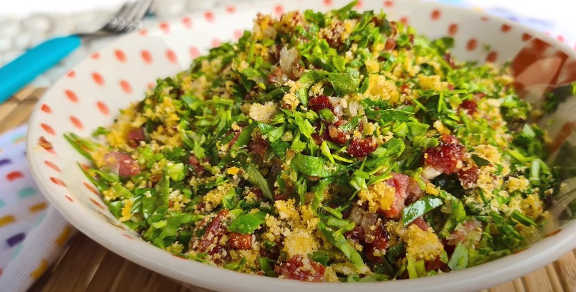
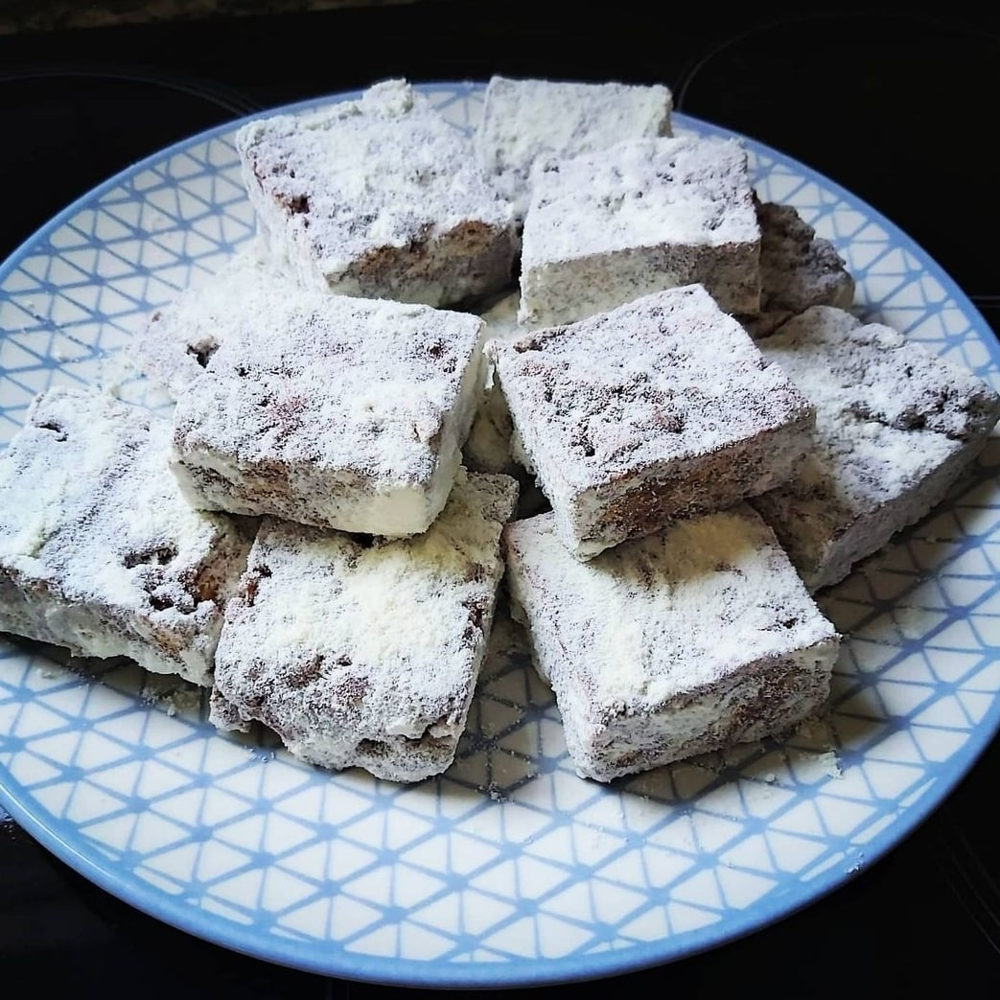

Lave bem as carnes salgadas, corte em pedaços e deixe de molho em água por 12 horas, trocando a água pelo menos duas vezes.
Coloque o feijão para cozinhar em bastante água com as folhas de louro.
Em uma panela à parte, cozinhe por ½ hora as carnes salgadas, escorra a água e reserve.
Quando o feijão estiver começando a amolecer, coloque as carnes, a lingüiça e o paio e deixe ferver em fogo brando até estar tudo bem cozido (leva algum tempo: de 2 a 3 horas).
Esquente o óleo ou banha de porco e refogue os temperos.
Coloque uma concha do feijão, amasse bem e deixe ferver despeje na feijoada e deixe ferver por mais 30 minutos.
Farofa de Couve

Ingredientes
2 xícaras de couve picada
1 cebola picada
2 dentes de alho picado
3 colheres de sopa de azeite de oliva ou óleo vegetal
1 xícara de farinha de mandioca crua
pimenta do reino
sal
pimenta calabresa (opcional)
Modo de Preparo
Leve ao fogo médio-baixo uma frigideira funda ou panela com o azeite ou óleo e refogue a cebola e os alhos até começar dourando.
Após o passo anterior adicione a couve e tampe. Deixe cozinhar por uns 5 minutos no fogo médio-baixo, para que a couve cozinhe no próprio vapor, até murchar. Depois mexa e tempere com sal e pimenta a gosto.
Em seguida coloque a farinha de mandioca e misture muito bem. Deixe no fogo médio por mais 2-3 minutos, ou até a farofa ficar soltinha.
Se a sua farofa de couve estiver seca, coloque mais um pouco de azeite, óleo ou até manteiga e misture. Poderá também colocar outros temperos e ingredientes a seu gosto, como molho de pimenta, suco de limão, banana, ovo, etc.
Palha Italiana

Ingredientes
1 lata de leite condensado
8 colheres (sopa) de chocolate em pó
1/2 colher (sopa) de margarina
1 pacote de biscoito maisena
Modo de Preparo
Pique o biscoito em pedacinhos pequenos e reserve.
Com o leite condensado, a margarina e o chocolate em pó, faça um brigadeiro.
Assim que o brigadeiro começar a soltar do fundo da panela, misture o biscoito picado até formar uma massa, retire do fogo.
Unte uma bancada de mármore, ou alguma superfície lisa, com margarina e despeje essa massa.